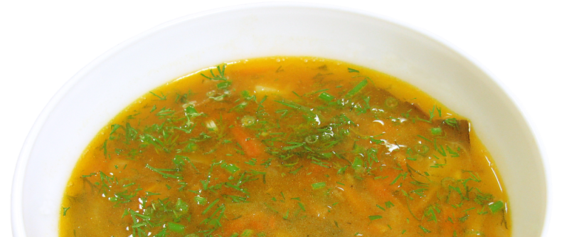

приготовление:
-
В кастрюле на слабый огонь поставить варить 700 гр. говядины. Чтобы бульон был наваристее, мясо положить вхолодную воду 2 л. Кастрюлю крышкой не накрывать. Снять с кипящего бульона пену и варить 2-2,5 часа до готовности мяса. Мясо вынуть, отделить от костей, разрезать на порционные куски и опустить снова в бульон.
-
500 гр. капусты, нарезанной соломкой, опустить в кипящий бульон. Когда бульон вновь закипит, положить нарезанные 3 картофелины и варить до готовности картофеля. Мелко нарезанные 1 морковь, 1 лук и 2 помидоры обжарить в разогретом растительном масле на сковороде, заправить ими щи и проварить в течение 15-20 минут. За 5 минут до окончания варки в кастрюлю положить перец, лавровый лист и соль по вкусу. Одновременно со специями в суп можно положить 1 дольку чеснока, растертого с солью.
-
Настояться в 10-15 минут. Готовые щи разлить в подогретые порционные тарелки, положить в каждую по кусочку мяса, заправить сметаной, сверху посыпать зеленью.